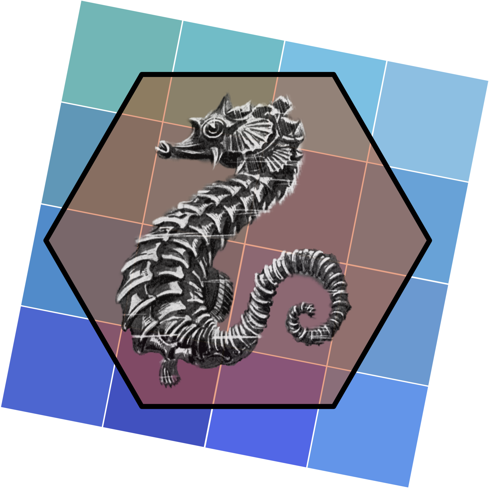

Study for Exascale Advances in a High-resolution Ocean using ROMS Coupled to E3SM (SEAHORCE)
MPAS‐O/ROMS Comparison, Nesting, and Coupling for Improved Representation and Parameterization of Coastal and Submesoscale Ocean Processes in E3SM


DOE funding announcement
Department of Energy Announces $70 Million for Research on Climate and Earth System Modeling in collaboration with Advanced Computing (Awards List)
What we do
Our overarching goal is to improve the ability of E3SM to model oceans with higher fidelity than currently possible.
MPAS-O Extension and Coupling
Design and implement a coupling strategy that allows E3SM to use ROMS as a regional nested model coupled to MPAS-O.
ROMS-X
A new version of ROMS which will be developed to be performance portable. The version of ROMS in COWAST forked to the seahorce-scidac Github organization will be leveraged for this task.
Get in touch
Submit an issue or start a discussion in the related seahorce-scidac Github repository